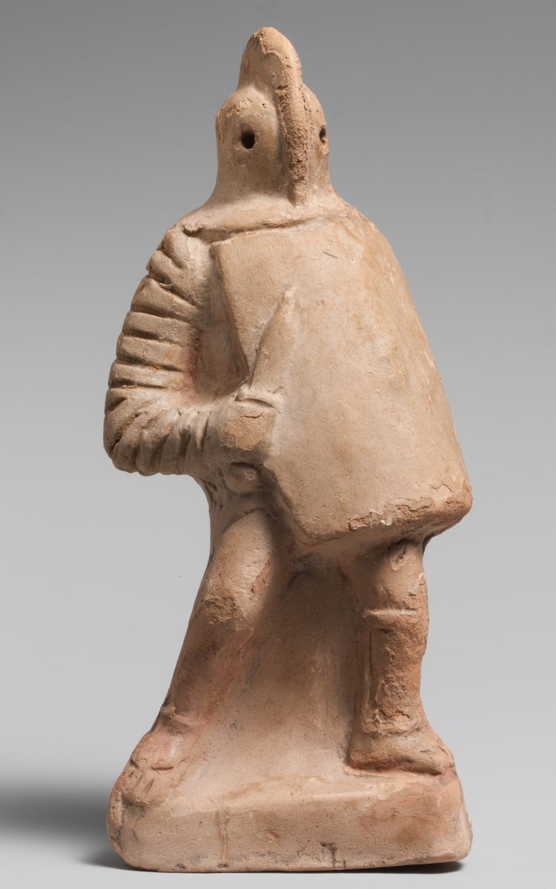

Unit 6 · Slavery in ancient Rome · Lesson 13
Spartacus I: from Capua to the final battle, 73–71 BCE
Two Greek writers who lived well over a century later tell the revolt of Spartacus differently. Where do they differ, and how do you write a topic sentence that picks up your thesis?
Year 11 Ancient History · Present with → or space · Read on a phone with R

Review · books closed · 6 minutes · press K for the timer
Five questions on earlier sources, and a sentence to write
- What does Pliny say in Letters 8.16 about a “kind of will”, and was it a legal right? He says he has “allowed them to make a kind of will, which I observe as religiously as if it were good in law”. It had no legal force, since in law an enslaved person could not hold property: it is Pliny’s own practice, in his own words, not a legal right.
- What does Gaius 1.43 limit, and what does 1.44 say the law does not cover? How many an owner could free by will: a share of those owned (half of three to ten, a third of eleven to thirty, a fourth of thirty-one to a hundred, a fifth of a hundred and one to five hundred), and never more than a hundred. Gaius 1.44: the statute covers only freeing by will; other ways of freeing were not limited by it.
- Who are the two people on the Hermia relief, and whose reading is “shown as Roman citizens”? Aurelius Hermia and Aurelia Philematium, a freed couple (both names include “L. l.”), about 80 BCE, from a tomb by the Via Nomentana in Rome. “The couple are shown as Roman citizens” is the British Museum label’s reading, as transcribed on Wikimedia Commons: the relief itself shows a couple and a verse epitaph.
- What does Diodorus 34/35.2.1 say Sicilian owners did to the enslaved people they bought, and what should you remember about how his account reaches us? They “at once applied marks and brands”, and (2.2) gave “the bare minimum for food and clothing”. Diodorus wrote about 60–30 BCE, following Posidonius, and this book survives only in later summaries and excerpts; this passage comes through Photius’s 9th-century summary: a late account, passed through other writers’ hands.
- When did the First Sicilian war end, and when did it begin? It ended in 132 BCE, which is certain (Bradley, 1989, p. 59), when Rupilius, a consul that year, took Tauromenium and Enna. Its start year is unknown: any year from 141 to 135 BCE is possible.
- Writing · write an Evaluate sentence, with a named criterion, on Columella’s jesting with “country slaves” (1.8.15). Name one criterion from Lesson 9’s card (position, purpose, date or typicality), then say what the passage is reliable for, what it is not, and why. For example: Judged by its typicality, Columella 1.8.15 is reliable for what one owner says he does, but not for how common such jesting was, because he reports only his own practice, in a handbook written to advise other owners.
Mark your own answers in a different colour. Which question did you find hardest?
Learning intentions and success criteria · 2 minutes
Today’s goals
- analyse the causes and course of the revolt of Spartacus
- write topic sentences that link to the thesis, and an introduction under time
- sequence the revolt from Capua to the final battle
- explain why it lasted as long as it did, using Plutarch and Appian
- write an introduction and a body paragraph in 17 minutes, with a topic sentence linked to my thesis
Syllabus outcomes: AH-11-02 proposes ideas about the varying causes and effects of events and developments · AH-11-03 explains the role and significance of forces, features, events, individuals and groups in shaping the past · AH-11-05 analyses different types of sources for evidence to support a historical account or argument · AH-11-07 communicates historical understanding, applying historical knowledge, terms and concepts. Life Skills: AH-LS-06 investigates people, events or developments of the ancient world · AH-LS-11 communicates information about the past using historical terms and concepts.
Note-making · the routine for the whole course
How to structure your notes
questions and key terms, written after
short phrases, arrows (→ leads to), abbreviations (c. = about; ↔ = compared with)
- 1A new pageA cue column about a quarter of the page wide; title and date at the top; room for a summary at the bottom.
- 2Listen and look, then writePhrases, not sentences. Today, for every stage of the revolt: where, when, and which writer says so.
- 3Write your own notes at the ✎ checkpointThen compare with the model notes, one row at a time. Add what you missed in a second colour.
- 4Write the cue questions afterwardsUse exam verbs: explain, analyse. To revise, cover your notes and answer the cues.
- 5Finish with a three-sentence summaryOne checkpoint today, after the map and the two narrators. The comparison grid in your booklet is your notes for the rest.
Key vocabulary · add to the unit word wall
Words for the revolt and for writing about it
| From the unit list | Meaning |
|---|---|
| Explain | ‘Relate cause and effect. Make the relationships between things evident. Provide why and/or how.’ (NESA, Glossary of key words) Department advice: show how and why, and which reason mattered most. |
| Topic sentence | The first sentence of a body paragraph; it answers the question and picks up a reason from the thesis. |
| Arguable thesis | A judgement someone could disagree with, which names its main reasons. |
| Slave wars (servile wars) | The three large revolts of enslaved people: two in Sicily (ended 132 BCE; 104 to about 100 BCE) and Spartacus’s in Italy (73–71 BCE). |
| Gladiator / ludus | A trained fighter, usually enslaved / a gladiatorial school, like Batiatus’s at Capua. |
| Decimation | Executing one soldier in ten as punishment; Crassus used it on units that had fled. |
| Added today | Meaning |
|---|---|
| Narrator | A writer who tells the story of events: here Plutarch and Appian, neither of whom was alive in 73–71 BCE. |
| Praetor | A Roman magistrate who could command an army; there were several each year, ranking below the two consuls. |
| Consul | One of the two chief elected magistrates of the Roman Republic each year; consuls commanded the biggest armies. |
| Round number | A number in a neat figure, such as 70,000: a claim by the writer, not a count. |
1 · The revolt on the map · I do — narrate the revolt and flag where the writers differ · 3 minutes
From Capua to the final battle, 73–71 BCE
- 1Capua, 73 BCEGladiators break out of a school. Plutarch and Appian differ here: Plutarch has “seventy-eight” get away; Appian has Spartacus persuade “about seventy”.
- 2Mount VesuviusAppian only: they “took refuge on Mount Vesuvius”, and “fugitive slaves and even some freemen from the fields” join them.
- 3Praetors (73 BCE), then both consuls (72 BCE)Both: Rome’s forces beaten in several battles, and Spartacus makes first for the Alps. Appian: a consul beats Crixus near Mount Garganus; the consuls meet him “in the country of Picenum”. They differ on the numbers: only Appian gives army totals (“numbered 70,000”, then 120,000).
- 4ThuriiAppian only: Spartacus gives up marching on Rome and takes the city.
- 5Crassus and Rhegium (late 72 BCE)Crassus takes command, has soldiers decimated, and walls the rebels in by the sea: Plutarch names Rhegium; Appian does not.
- 6The final battle (71 BCE)They differ on the end: Plutarch has Spartacus “cut down” fighting; Appian: “The body of Spartacus was not found”, after he pushes on towards Brundisium. Neither names the battlefield.
1 · The revolt on the map · I do — who is telling us, and when? · 1½ minutes
Two narrators who were not there
The earliest extant narrative of Spartacus’s rebellion consists of four sections (8-11) of the biography of the triumvir M. Licinius Crassus, one of the great sequence of Parallel Lives composed by Plutarch of Chaeronea …
… in the last two decades or so of his life. The collection as a whole is didactic and ethical in purpose …
… Spartacus, who was after all only incidental to Crassus from Plutarch’s point of view.
K. R. Bradley, Slavery and Rebellion in the Roman World, 140 B.C.–70 B.C. (Indiana University Press, 1989), Appendix I, p. 136
The second of the main narratives on Spartacus is provided by Appian of Alexandria, who was writing a generation or so after Plutarch.
K. R. Bradley (1989), Appendix I, p. 137; the Civil Wars were “intended to show how the disciplined concord of the Roman imperial system” had grown out of the chaos of the 1st century BCE (pp. 137–138)
- 173–71 BCEThe revolt, on the modern dating (Bradley, Appendix III).
- 2About 100–120 CEPlutarch’s Life of Crassus: early 2nd century CE, well over a century and a half after the revolt.
- 3About the middle of the 2nd century CEAppian’s Civil Wars, “a generation or so” after Plutarch: about two centuries after the revolt.
- 4What to be careful ofBoth depend on earlier writers who are lost; Bradley says positive identification of Plutarch’s sources “is impossible to achieve”, and that Appian “will probably have used a supplementary source”.
Neither writer was alive during the revolt. What does that mean for how you read them?
Each is a later writer, working from earlier accounts that are lost and shaping the story for his own purpose, so their figures are claims, and differences between them are to be expected. Neither is a witness, and neither is an enslaved person’s voice.
Notes checkpoint · I do · 1½ minutes · cue: sequence and narrators
What do the map and the two narrators show?
2 · Plutarch and Appian · We do — supported reading (1 of 3) · the break-out · pairs read, then fill the grid · underline each number, circle what each writer says Spartacus was
The break-out at Capua, in two narrators’ words
A certain Lentulus Batiatus had a school of gladiators at Capua, most of whom were Gauls and Thracians.
… owing to the injustice of their owner, they were kept in close confinement and reserved for gladiatorial combats.
Two hundred of these planned to make their escape, and when information was laid against them, those who got wind of it and succeeded in getting away, seventy-eight in number, seized cleavers and spits from some kitchen and sallied out.
The first of these was Spartacus, a Thracian of Nomadic stock, possessed not only of great courage and strength, but also in sagacity and culture superior to his fortune, and more Hellenic than Thracian.
Plutarch, Life of Crassus 8.1–2, early 2nd century CE · trans. B. Perrin (Loeb, 1916)
At the same time Spartacus, a Thracian by birth, who had once served as a soldier with the Romans, but had since been a prisoner and sold for a gladiator, and was in the gladiatorial training-school at Capua, persuaded about seventy of his comrades to strike for their own freedom rather than for the amusement of spectators.
They overcame the guards and ran away, arming themselves with clubs and daggers that they took from people on the roads, and took refuge on Mount Vesuvius.
Appian, Civil Wars 1.116, about the middle of the 2nd century CE · trans. H. White (Loeb, 1913)
2 · Plutarch and Appian · We do — supported reading (2 of 3) · numbers and commanders · underline each number, box each Roman commander
The numbers grow and the first commanders are sent
In the second place, Publius Varinus, the praetor, was sent out against them, whose lieutenant, a certain Furius, with two thousand soldiers, they first engaged and routed …
… but he took a proper view of the situation, and since he could not expect to overcome the Roman power, began to lead his army toward the Alps, thinking it necessary for them to cross the mountains and go to their respective homes, some to Thrace, and some to Gaul.
But his men were now strong in numbers and full of confidence, and would not listen to him, but went ravaging over Italy.
… they were constrained by their fear and peril to send both consuls into the field, as they would to a war of the utmost difficulty and magnitude.
Plutarch, Life of Crassus 9.4–6 · trans. B. Perrin (Loeb, 1916)
Varinius Glaber was first sent against him and afterwards Publius Valerius, not with regular armies, but with forces picked up in haste and at random, for the Romans did not consider this a war yet, but a raid, something like an attack of robbery.
After this still greater numbers flocked to Spartacus till his army numbered 70,000.
Spartacus endeavoured to make his way through the Apennines to the Alps and the Gallic country, but one of the consuls anticipated him and hindered his flight while the other hung upon his rear.
Spartacus sacrificed 300 Roman prisoners to the shade of Crixus, and marched on Rome with 120,000 foot …
Spartacus changed his intention of marching on Rome.
Appian, Civil Wars 1.116–117 · trans. H. White (Loeb, 1913)
2 · Plutarch and Appian · We do — supported reading (3 of 3) · Crassus and the last battle · underline each number, circle how each writer ends Spartacus
Crassus takes command, and the last battle
On learning of this, the Senate angrily ordered the consuls to keep quiet, and chose Crassus to conduct the war …
Five hundred of them, moreover, who had shown the greatest cowardice and been first to fly, he divided into fifty decades, and put to death one from each decade, on whom the lot fell …
Crassus now came up, and observing that the nature of the place suggested what must be done, he determined to build a wall across the isthmus, thereby at once keeping his soldiers from idleness, and his enemies from provisions.
Finally, after his companions had taken to flight, he stood alone, surrounded by a multitude of foes, and was still defending himself when he was cut down.
Plutarch, Life of Crassus 10.1–2, 10.4 and 11.7 · trans. B. Perrin (Loeb, 1916)
… this war, so formidable to the Romans (although ridiculed and despised in the beginning, as being merely the work of gladiators), had now lasted three years.
When he arrived at his destination he received also the two legions of the consuls, whom he decimated by lot for their bad conduct in several battles.
He overtook them and enclosed them with a line of circumvallation consisting of ditch, wall, and paling.
… he made a dash with his whole army through the lines of the besieging force and pushed on to Brundusium with Crassus in pursuit.
The Roman loss was about 1000. The body of Spartacus was not found.
… they all perished except 6000, who were captured and crucified along the whole road from Capua to Rome.
Appian, Civil Wars 1.118 and 1.120 · trans. H. White (Loeb, 1913)
2 · Plutarch and Appian · We do — pairs complete the grid from the extracts · same or different? · 2½ minutes
Plutarch | Appian: what does each writer say?
Fill in each cell from the extracts, in the writer’s words, then decide: same or different? Say where they differ.
| Row | Plutarch (Crassus 8–11) | Appian (Civil Wars 1.116–120) | Same or different? |
|---|---|---|---|
| The numbers | “seventy-eight” get away; no total given for the rebel army | “about seventy”; the army “numbered 70,000”, then “120,000 foot”; “6000” crucified; the war “had now lasted three years” | Different. Different figures for the break-out; only Appian gives army totals. All are round numbers: claims, not counts. |
| The start | kept confined “owing to the injustice of their owner”; two hundred planned to escape; they seized “cleavers and spits from some kitchen” | Spartacus “persuaded about seventy of his comrades to strike for their own freedom”; they took clubs and daggers from people on the roads and “took refuge on Mount Vesuvius” | Different. Plutarch names the owner’s injustice; Appian has Spartacus persuade them. Only Appian names Vesuvius. |
| Spartacus himself | “a Thracian of Nomadic stock”, of “great courage and strength”, “superior to his fortune, and more Hellenic than Thracian” | “a Thracian by birth, who had once served as a soldier with the Romans”, then a prisoner “sold for a gladiator” | Partly the same. Both: a Thracian. Plutarch stresses his character and culture; Appian gives him a past as a soldier of Rome. |
| The end | he “stood alone, surrounded by a multitude of foes, and was still defending himself when he was cut down” | he is “surrounded and slain”; “The body of Spartacus was not found”; 6,000 “captured and crucified” | Partly the same. Both: he dies fighting. Only Appian says the body was not found and gives the crucified; neither names the battlefield. |
2 · Plutarch and Appian · We do — cold call · how do the narrators differ, and why? · 2 minutes
Why might two narrators tell it differently?
The collection as a whole is didactic and ethical in purpose, for Plutarch intended his portrayals of character to allow his readers to achieve virtue through imitating or avoiding (as appropriate) the moral conduct of the great public figures of the past.
K. R. Bradley (1989), Appendix I, p. 136
… attempting to distinguish between favorable and unfavorable portrayals of Spartacus in the sources …
The results are dubious.
K. R. Bradley (1989), Appendix I, p. 138, on two modern studies (Gabba; Levi)
Plutarch and Appian differ on the numbers, the start, the end and Spartacus himself. Choose one difference. Why might the two writers tell it differently?
Neither was there, and both worked from earlier accounts that are lost, so a figure such as 70,000 may be an earlier writer’s estimate or a round number, and the two may simply have followed different sources. They also wrote for different purposes. Plutarch’s Lives aim to show character, and Spartacus is “only incidental” to the life of Crassus, so he may open with the owner’s injustice and a portrait of Spartacus’s character. Appian’s Civil Wars trace how Rome passed from chaos to concord, so the revolt may be one crisis in that story. This is probable, not proved: we cannot see their sources.
3 · You do · Writing focus · 6 minutes · I do → We do → apply
Writing focus: a topic sentence picks up a reason from your thesis
Each topic sentence picks up one reason from the thesis, in the thesis’s own key words.
Worked example · written for this lesson · on a different war and a different question
Question: Explain why the First Sicilian slave war lasted until 132 BCE.
Thesis: The war lasted until 132 BCE mainly because Rome at first sent forces that the rebels outnumbered, such as Hypsaeus’s “eight thousand Sicilian troops”, but also because the rebels held strong centres at Tauromenium and Enna and because it took three consuls to end it.
Topic sentence 1: The main reason the war lasted is that Rome at first sent forces that the rebels outnumbered: Diodorus says Hypsaeus, with “eight thousand Sicilian troops”, was beaten by rebels who “now numbered twenty thousand”.
Topic sentence 2: A second reason is that the rebels held strong centres: Diodorus says Rupilius took Enna “also by betrayal, since its strength was impregnable to force of arms”.
Topic sentence 3: A third reason the war lasted is that it took three consuls, the third being Rupilius in 132 BCE, to end it (Bradley, 1989, p. 61).
Reason 1: named in the thesis, picked up in topic sentence 1 in the same words
Reason 2: ‘strong centres’ comes back in topic sentence 2
Reason 3: ‘three consuls’ again in topic sentence 3, with its evidence
A student wrote “Rupilius besieged Tauromenium and then Enna, and Bradley (1989, p. 64) says both fell by betrayal.” Which repair links it to the thesis?
- ATauromenium and Enna were the rebels’ last strong centres, and both were “captured only by betrayal”.
- BA second reason the war lasted is that the rebels held strong centres: Tauromenium and Enna were “captured only by betrayal”.
- CA strong centre is a town that is very hard to capture: Tauromenium and Enna were “captured only by betrayal”.
- DA second reason the war lasted is that it took three consuls: Tauromenium and Enna were “captured only by betrayal”.
A still narrates · C opens with a definition · D names a different reason from its evidence.
Write a thesis that names your reasons, then a topic sentence that picks up one in the same key words. Your Writing toolkit (booklet pages 3–4).
3 · You do · 22 minutes · plan for 5 (press K, click 5) · then write for 17 (press K, click 12, then 5)
Explain why the revolt of Spartacus lasted as long as it did.
What does this question ask you to do? Check your deconstruction.
- Verb
- explain: NESA, Glossary of key words: ‘Relate cause and effect. Make the relationships between things evident. Provide why and/or how.’ Department advice: give the reasons, link each to its effect, and say which mattered most
- Topic
- why the revolt lasted as long as it did: reasons, not a retelling of the events from Capua to the last battle
- Limits
- the revolt of Spartacus, 73–71 BCE; the evidence of Plutarch and Appian in your extracts; not the Sicilian wars, and not what Spartacus aimed to do
- Do
- an introduction (context, then a thesis that names and ranks your reasons) and one body paragraph whose topic sentence picks up one reason from your thesis; evidence from both writers, each named, each number attributed to the writer who gives it
Write your plan on your planning template in the first 5 minutes of writing time. In the HSC, reading time is for thinking only. NESA’s 2027 HSC student guide says: “You must not write on or mark your exam in any way or use any equipment (including highlighters).”
- Plan (5 minutes): deconstruct 1 · thesis naming your reasons 1 · a topic sentence for each of three reasons 2 · evidence for the first, with its writer 1.
- Write (17 minutes): an introduction (who, when, where, then a thesis that previews your reasons and says which mattered most) and one body paragraph (Judge → Evidence → Analyse → Evaluate → Resolve) whose topic sentence picks up one reason from your thesis.
Plan template: a box for each step. Topic-sentence frames: “The main reason the revolt lasted is that …” · “A second reason is that …” Your Writing toolkit (booklet pages 3–4): connectives by function.
Plutarch’s Spartacus is “more Hellenic than Thracian”; Appian’s “had once served as a soldier with the Romans”. Analyse why each writer might shape him this way. Use each writer’s purpose (Bradley, 1989, pp. 136–138).
3 · Check · untimed revision · 5 minutes
Does your topic sentence pick up your thesis? Improve one
- In your thesis, underline the key words of each reason you name.
- In your topic sentence, underline the key words. Do they match one of your reasons?
- If not, rewrite the topic sentence in your second colour so that it picks up one reason in the same key words.
- Check that the reason you picked up is one your thesis names, and that your evidence is about that reason.
Your Writing toolkit (booklet pages 3–4): connectives by function.
A thesis that names its reasons and says which mattered most, in discipline words, without a roadmap sentence. A topic sentence that picks up one of those reasons in the same key words. Evidence from both writers, each named, with their round numbers treated as claims. A limit on what the evidence can show. A resolving sentence that refers back to the question.
3 · Check · warm and cool comments · 3 minutes
One warm comment, one cool comment, and a vote
- Read your partner’s thesis and topic sentence.
- Warm: “Your topic sentence picks up … from your thesis: the shared words are …”
- Cool: “To link more tightly, use the words … from your thesis.”
A volunteer reads a thesis and a topic sentence. Thumbs up = the topic sentence picks up a reason from the thesis in the same key words · sideways = it picks up the reason but in different words · down = it does not pick up a reason.
Cover the thesis and read only the topic sentence. Could you say which reason it is for?
Exit ticket · 2 minutes · before you leave
Your link ticket
Finish the sentence: “My topic sentence links to my thesis by …”
The shared key words, named, or the reason from the thesis that the topic sentence picks up, not “it is about the same thing”. A claim that is true of your own two sentences. One thing you would change to make the link tighter.
Then check yourself against today’s three “I can” statements. Next lesson: Lesson 14, Spartacus II: aims, significance and interpretations.
Finish your notes If time · or at home
Summary: three sentences
- Where did the revolt begin and end, and in what order did it happen?
- Where do Plutarch and Appian differ, and why might they?
- What does it mean for a topic sentence to link to the thesis?
In 73 BCE gladiators broke out of a school at Capua, seventy-eight on Plutarch’s figure and about seventy on Appian’s, and on Appian’s account took refuge on Mount Vesuvius; Rome sent praetors, then both consuls, and then Crassus, who walled the rebels in beside the sea before the final battle in 71 BCE. Plutarch and Appian differ on the numbers, the start, the end and Spartacus himself, which may reflect their different purposes and their lost sources, and each wrote well over a century and a half later. A topic sentence links to the thesis by picking up one of its reasons in the same key words.
Practice and review · 1 of 4 · true, false, justify
True or false? Justify your answer
- 1Plutarch and Appian give the same number for the gladiators who broke out at Capua. False — Plutarch has “seventy-eight” get away; Appian has Spartacus persuade “about seventy”.
- 2Appian says Spartacus first marched on Rome. False — he first tried to make his way “to the Alps and the Gallic country”; only afterwards does he march on Rome with 120,000 foot, and then he “changed his intention”. Plutarch also has the Alps first.
- 3Appian’s 70,000 and 120,000 are counts of Spartacus’s army. False — they are round numbers given by a writer who was not there: claims, not counts. Plutarch gives no total for the rebel army in these chapters.
- 4Plutarch says Spartacus had once served as a soldier with the Romans. False — Appian says it (1.116). Plutarch calls him “a Thracian of Nomadic stock” and “more Hellenic than Thracian”.
- 5Both writers say the body of Spartacus was not found. False — Appian says so (1.120). Plutarch says Spartacus “was still defending himself when he was cut down” and says nothing about the body in these chapters.
- 6Neither Plutarch nor Appian was alive during the revolt. True — the revolt was in 73–71 BCE; Plutarch lived about 45–120 CE and wrote in the early 2nd century CE, and Appian wrote about a generation after him (Bradley, 1989, pp. 136–137).
Practice and review · 2 of 4 · topic sentences that link
Repair a topic sentence, then match sentences to reasons
The thesis (First Sicilian slave war): “The war lasted until 132 BCE mainly because Rome at first sent forces that the rebels outnumbered, but also because the rebels held strong centres and because it took three consuls to end it.”
A student’s topic sentence for the first reason: “Diodorus says that many armies were cut to pieces by the rebels.” Rewrite it so that it picks up the first reason in the thesis’s key words.
It must say why the war lasted, in the thesis’s words (“forces that the rebels outnumbered”), and then give the evidence. For example: The main reason the war lasted is that Rome at first sent forces that the rebels outnumbered, so that, as Diodorus says, “many armies were cut to pieces by the rebels”.
Use the same thesis. Which sentence picks up the third reason, which only narrates, and which only defines?
- “Rupilius took Tauromenium and Enna in 132 BCE.”
- “A third reason the war lasted is that it took three consuls, since Rupilius was the third to lead the Roman effort (Bradley, 1989, p. 61).”
- “A consul was one of the two chief elected magistrates of the Roman Republic.”
Sentence 2 picks up the third reason: it uses the thesis’s key words, three consuls, and gives its evidence. Sentence 1 only narrates: it never says why the war lasted. Sentence 3 only defines a word and drifts from the question.
Practice and review · 3 of 4 · extension
Why might each narrator shape Spartacus this way?
Plutarch’s Spartacus is “more Hellenic than Thracian”; Appian’s had “once served as a soldier with the Romans”. Analyse why each writer might shape him this way.
The first of these was Spartacus, a Thracian of Nomadic stock, possessed not only of great courage and strength, but also in sagacity and culture superior to his fortune, and more Hellenic than Thracian.
Plutarch, Life of Crassus 8.2 · trans. B. Perrin (Loeb, 1916)
At the same time Spartacus, a Thracian by birth, who had once served as a soldier with the Romans, but had since been a prisoner and sold for a gladiator …
Appian, Civil Wars 1.116 · trans. H. White (Loeb, 1913)
… attempting to distinguish between favorable and unfavorable portrayals of Spartacus in the sources and their conceptions of the rebellion as either a slave revolt or a broader movement including other discontented elements.
The results are dubious.
K. R. Bradley (1989), Appendix I, p. 138, on two modern studies (Gabba; Levi)
It says what each writer actually writes, in his own words, before it says why. It uses each writer’s purpose, taken from the historian, as a reason that might shape the portrait, and keeps the hedge: it says “might”, because we cannot see their sources or their intentions. It attributes each view in the present tense (“Plutarch calls him …”). It ends with a degree of confidence, not a yes or no.
Practice and review · 4 of 4 · cover your notes and answer from memory
Quick checks
- How many gladiators does each writer say broke out of the school at Capua? Plutarch: “seventy-eight”. Appian: “about seventy”. Both are the writers’ figures.
- Which mountain does Appian say the rebels took refuge on, and does Plutarch name it in chapters 8–11? Mount Vesuvius (Appian 1.116). Plutarch’s extract does not name it.
- What did Spartacus first try to do after beating the praetors, in both writers? Make for the Alps (Plutarch 9.5; Appian 1.117: “the Alps and the Gallic country”). Only Appian then has him march on Rome, and change his intention.
- What kind of figure is Appian’s 70,000, and what does Plutarch give for the rebel army? A round number: a claim, not a count. Plutarch gives no total in these chapters.
- When did each narrator write, compared with the revolt? Plutarch in the early 2nd century CE, well over a century and a half later; Appian about the middle of the 2nd century CE, about two centuries later.
- What does Bradley say about Plutarch’s purpose and about Spartacus in the Life of Crassus? The Parallel Lives are “didactic and ethical in purpose”, and Spartacus was “only incidental to Crassus from Plutarch’s point of view”.
- What must a topic sentence do? Pick up one reason from the thesis, in the thesis’s key words, so that the reader can see what the paragraph is for.
Sources and credits
Where everything comes from
Plutarch, Life of Crassus 8–11: trans. B. Perrin (Loeb Classical Library, vol. III, 1916, public domain), LacusCurtius. Appian, Civil Wars 1.116–121: trans. H. White (Loeb, 1913, public domain), LacusCurtius. Diodorus of Sicily, Library of History 34/35.2: trans. F. R. Walton (Loeb Classical Library vol. XII, Harvard University Press, 1967; in copyright), quoted briefly.
Review items, as in Lessons 7, 8, 11 and 12: Pliny the Younger, Letters 8.16, trans. W. Melmoth, revised by W. M. L. Hutchinson (Loeb, 1915, public domain), archive.org; Gaius, Institutes 1.43–44, trans. E. Poste, 4th edn, revised by E. A. Whittuck (Oxford, 1904, public domain), archive.org; Columella, De Re Rustica 1.8.15, trans. H. B. Ash (Loeb, 1941, public domain), LacusCurtius; the British Museum gallery label for the Hermia relief (GR 1867,0508.55), as transcribed on Wikimedia Commons.

Modern historian, quoted briefly: K. R. Bradley, Slavery and Rebellion in the Roman World, 140 B.C.–70 B.C. (Indiana University Press, 1989), pp. 59–65 (the First Sicilian war), pp. 136–138 (Appendix I, the literary sources) and p. 142 (Appendix III, the duration of the Spartacan war). The writers’ dates follow Bradley (1989), pp. 136–137. The NESA Glossary of key words (definitions quoted word for word) and the NESA 2027 HSC student guide, p. 19 (step 3, “Reading time”).
Outcomes and content: NSW Education Standards Authority (NESA), Ancient History 11–12 Syllabus (2024). © NESA.
- Terracotta statuette of a helmeted gladiator with a shield, Roman, 1st–2nd century CE (The Met, 10.210.78) · The Metropolitan Museum of Art, Rogers Fund, 1910 · CC0 1.0 · source
The campaign map was drawn for this lesson; its coastlines are from Natural Earth (public domain), and every place and area on it is approximate. The statuette photograph is public domain and was cropped and resized for the web. It is shared under the licence shown.